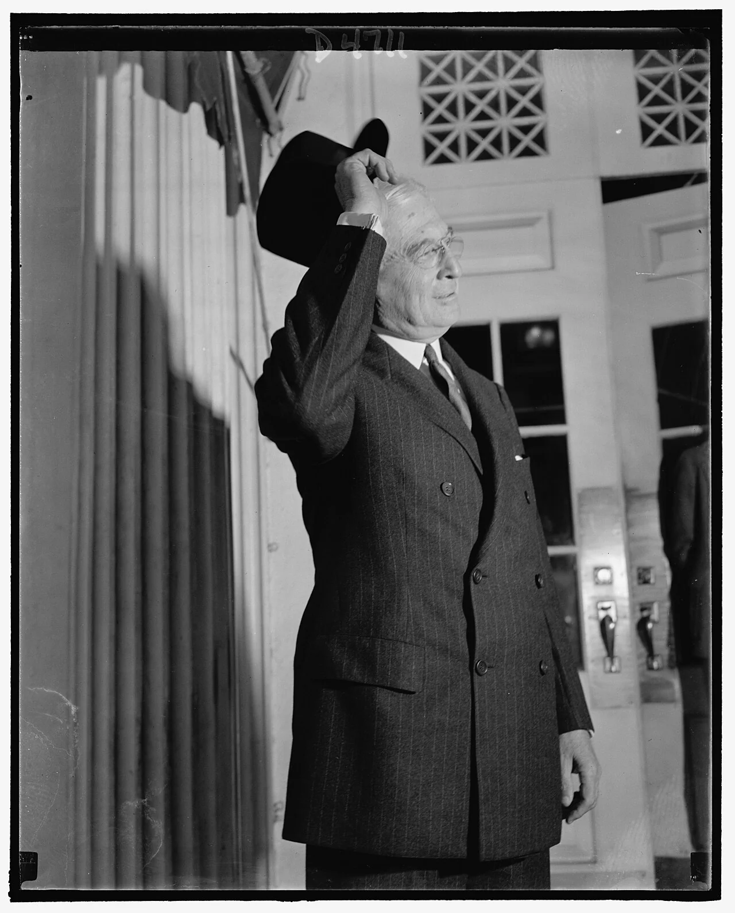
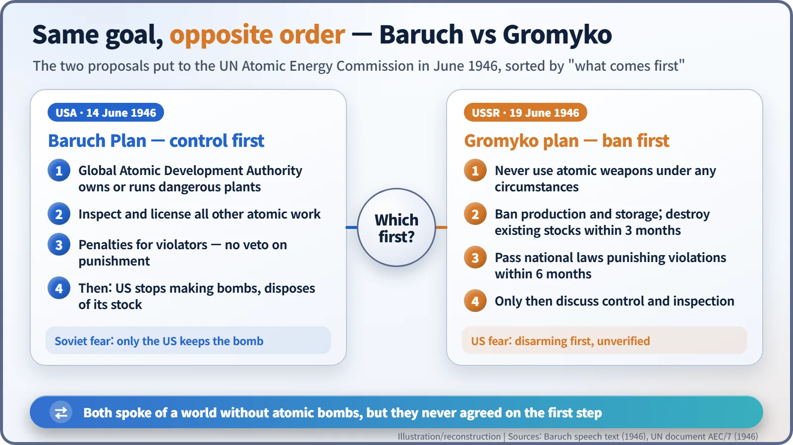
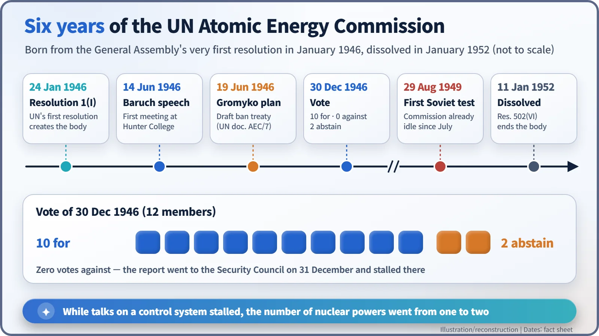
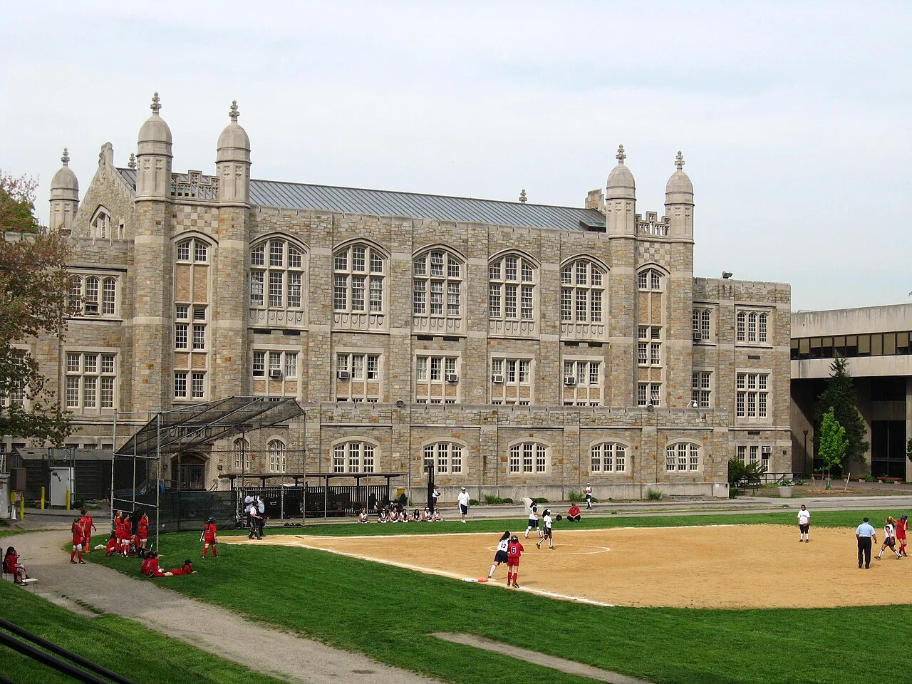

Nuclear History · 129
"The Quick and the Dead" — The Baruch Plan and the UN Atomic Energy Commission (1946)
Control first or ban first: the order of steps that the first UN nuclear talks could never settle.
On 14 June 1946 Bernard Baruch opened the first meeting of the UN Atomic Energy Commission by telling delegates they had come "to make a choice between the quick and the dead". His plan put atomic control first and banned the veto over punishment; five days later Andrei Gromyko answered with a ban on the bomb first. The commission backed Baruch's principles without a single vote against, yet the plan stalled in the Security Council and the commission was dissolved in 1952.
A gym turned council chamber
On 14 June 1946 a crowd gathered on the Bronx campus of Hunter College in New York. A few months earlier the place had been an ordinary college; then about two hundred workers spent fifteen days turning its main gym into a modern Security Council chamber, because the newborn United Nations was using the campus as its first temporary home. That day the UN Atomic Energy Commission held its first meeting there. The man at the microphone was the United States representative, the 75-year-old financier Bernard M. Baruch (1870–1965). His first sentence has been quoted ever since: "We are here to make a choice between the quick and the dead." [1] [6]
Today "quick" means fast. In the King James Bible and the Apostles' Creed it means living. Baruch was saying that the delegates had come to choose between the living and the dead. "That is our business," he added.

The UN's very first resolution
On 24 January 1946 the UN General Assembly adopted Resolution 1(I). The first resolution in the Assembly's history was about atomic energy: it set up a commission "to deal with the problems raised by the discovery of atomic energy". The commission had twelve members, the eleven states on the Security Council plus Canada. Its tasks were to exchange basic scientific information for peaceful ends, to control atomic energy so that it was used only for peaceful purposes, to eliminate atomic weapons from national armaments, and to provide effective safeguards such as inspection. [2] [4]
Washington's position grew out of the Acheson–Lilienthal Report of March 1946. Baruch, a Wall Street investor who had chaired the War Industries Board in the First World War and advised several presidents, was asked to carry it to the UN. His letter of acceptance of 13 March to Secretary of State James Byrnes set out his working hours (10 a.m. to noon and 2:30 to 4:30 p.m., no night sessions) and asked for deputies and scientific advisers. Yet the same letter went straight to the point: control, the elimination of weapons and safeguards were "the crux". [3]
What Baruch added
The heart of the 14 June proposal was an International Atomic Development Authority. It would hold "managerial control or ownership of all atomic-energy activities potentially dangerous to world security" and have the "power to control, inspect, and license all other atomic activities". So far, this followed the Acheson–Lilienthal design. [1]
Baruch added two things. The first was punishment. He listed five violations that should carry penalties:
- illegal possession or use of an atomic bomb;
- illegal possession or separation of bomb material;
- seizure of facilities owned or licensed by the Authority;
- wilful interference with its work;
- running dangerous projects without a licence or against its terms.
The second was the veto: "There must be no veto to protect those who violate their solemn agreements not to develop or use atomic energy for destructive purposes." Even a permanent member of the Security Council would not be able to block punishment.
There was also a sequence. Only after an adequate system of control was working, with penalties agreed, would the United States stop making bombs, dispose of its existing bombs under a treaty, and hand the Authority full information on atomic production. [1] [2]
Five days later, the opposite answer
On 19 June 1946 the 36-year-old Soviet representative Andrei A. Gromyko (1909–1989) tabled a draft convention, UN document AEC/7. It would bind states never to use atomic weapons under any circumstances, to ban their production and storage, to destroy all existing stocks within three months, and to pass national laws punishing violations within six months. Sources differ on whether the three months were to run from signature or from entry into force.
Both sides spoke of a world without atomic bombs. They disagreed about the first step. For Washington it was control first; for Moscow, a ban first.

Imagine two neighbours negotiating, one holding the only gun on the street. He says, "First we install security cameras, then I'll hand over the gun." The other says, "Hand over the gun first; we'll talk about cameras later." To Moscow, the Baruch sequence meant the United States would keep its bombs while the control system was built. To Washington, the Soviet sequence meant giving up its only atomic weapons with nothing to verify the other side.
No votes against, yet it stalled
On 30 December 1946 the commission voted on its first report, which embodied Baruch's principles: 10 in favour, none against, two abstentions (the Soviet Union and Poland). The report went to the Security Council on 31 December, but without Soviet support it was not adopted. It is often said that "the Soviets vetoed the Baruch Plan". It is more accurate to say that there was not a single vote against it in the commission, and that the plan then stalled in the Security Council. The US State Department's historians put it this way: "the Polish and Soviet abstentions thwarted the adoption". [2] [5]

Talks went on into 1948 with little progress. On 4 November 1948 the General Assembly, in Resolution 191(III), voiced concern at the deadlock. The commission stopped meeting after July 1949, and on 29 August 1949 the Soviet Union tested its first atomic bomb. The General Assembly dissolved the commission on 11 January 1952 (Resolution 502(VI)) and passed its work to a new Disarmament Commission. While the talks stood still, the number of nuclear powers went from one to two.
Whose fault?
Historians still disagree. The Soviet side saw the plan as a way to extend the American monopoly; in October 1946 Foreign Minister Vyacheslav Molotov warned, in substance, that atomic bombs on one side could be answered by atomic bombs, and perhaps something more, on the other. The historian David Holloway argues that Stalin and Molotov followed the UN talks closely but did not think an agreement possible or desirable; their aim was to stop the United States from turning its monopoly into political gain. Gromyko himself, some forty years later, recalled: "I am certain that Stalin would not have given up the creation of his own atomic bomb." [5]
On the American side, scholars such as David S. Painter, Melvyn Leffler and James Carroll have asked whether the penalty and no-veto clauses made Soviet acceptance less likely, and whether the plan was a serious attempt at cooperation. Bertrand Russell, by contrast, wrote in 1961 that it had "very great merits and showed considerable generosity".
The plan failed, but its questions lived on. The idea of an international body that inspects rather than owns returned with the International Atomic Energy Agency in 1957, and a different answer, dividing the world into nuclear-weapon and non-nuclear-weapon states, came with the Non-Proliferation Treaty in 1968. In 1946 the talks broke down not over technology, but over trust and the order of steps.
